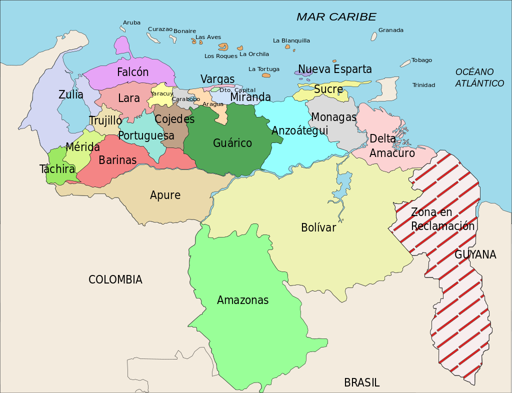

Народности
Население Венесуэлы — 28,1 миллиона человек.
Годовой прирост — 1,5 %;
Рождаемость — 20 на 1000 ;
Смертность — 5 на 1000;
Средняя продолжительность жизни — 70,84 лет у мужчин, 77,87 лет у женщин;
Заражённость вирусом иммунодефицита (ВИЧ) — 0,7 % (оценка 2001 года).
Этнорасовый состав: метисы — 67 %, европейцы (испанцы, итальянцы, португальцы, немцы, французы) — 21 %, африканцы — 10 %, индейцы — 2 %.
Грамотность — 95 % (2005—2008 годы).
Городское население — 93 % (в 2008 году).

Факты
Венесуэла имеет богатую природу и разнообразный ландшафт. Здесь есть острова, реки, болота, горы, ледники, пустыни, каньоны, леса и джунгли.
В Венесуэле расположено самое большое озеро Южной Америки. Имея возраст от 20 до 40 млн лет, Маракайбо также является одним из самых древних на земле.
Климат
На большей части территории Венесуэлы преобладает субэкваториальный климат. Температура воздуха мало меняется в течение года, отличия в сезонах заключаются в количестве выпадающих осадков. На северном побережье Венесуэлы и на островах Карибского моря преобладает тропический тип климата.